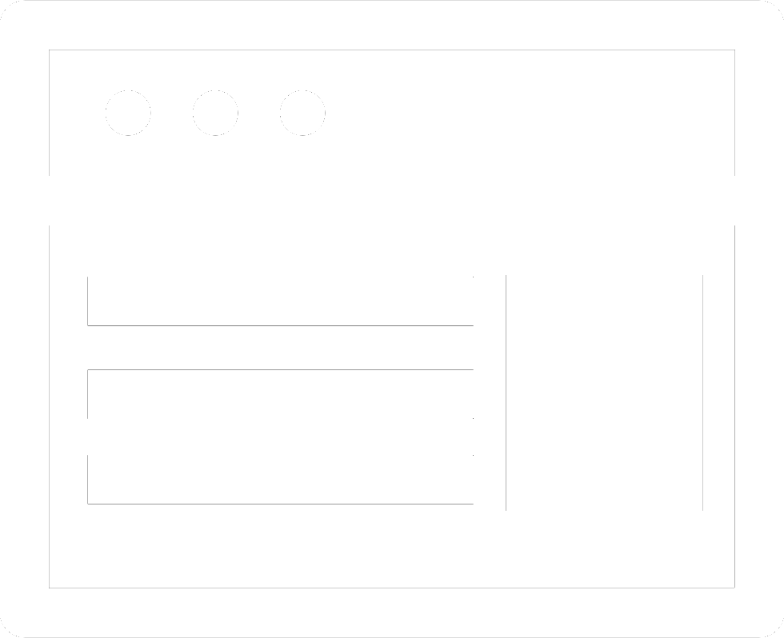
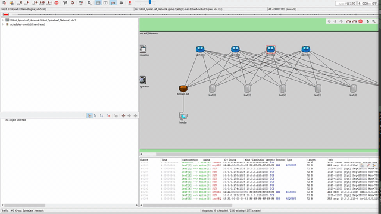

Awards
ECRS Scholarship Reciepent (2019 - 2022)
ECR Software corporation is a transaction and retail solutions provider
located in Boone, NC. They provide the recipient with a yearly scholarship
and the opportunity for future internship/employment. The scholarship also
allows the recipient to attend study halls, a weekly seminar, and be on research
teams with other S-Stem scholars.
NC Gold Medalist in SkillsUSA Competitive Programing (2018)
SkillsUSA is a worldwide organization that allows students to compete in 100+
competitions across many different skill groups. For Competitive Programing,
50 students were tasked with a few programming assignments and a test to complete.
I placed 1st and was qualified to compete on the national level.
USA Silver Medalist in SkillsUSA Competitive Programming (2018)
On the national level, SkillsUSA has a student from every state to compete.
For the competition every student had to complete a few programming assignments,
complete a test, and do an interview. I came in second place and received a silver medal.
Other honorable mentions: Dean's List (2018 - 2020), Chancelor's List (2018 - 2019),
Honors Computer Science Program.
Projects
Camp Carefree Online Application Process (Fall 2020 - Spring 2021)
As an ECRS scholar, I am on a team with three other S-Stem scholar students. Every year we
are required to work on a project and present our results in the spring. As of fall 2020,
my team and I are creating a secure database and online application process so that Camp
Carefree counselors and campers can apply online, save time, money, and frustration that
comes with paper applications for the directors and nurses of Camp Carefree. (Camp Carefree
is a camp for kids with chronic illnesses. I go more in-depth on my social page.)
My role on the team is a front-end developer. However, since I am the only person who has
worked at Camp I have picked up a few additional roles. Such as becoming the leader of the
team, being in communication with the board members of CCF, and have been planning out and
designing the website and database so that it meets Camp's goals and needs. The link below
will take you to our in progress CCF page.

Unreal Engine Game Development (Fall 2019 - Spring 2020)
As a new ECRS scholar, I was placed on a team where we developed an Unreal Engine horror
game based in the model of the computer science building at App State. The horror game only
lacked a story line, but had full mechanics, textures, sound, lighting, obsticles, and
an AI "monster".
Work
Appalachian State University Research Assistant (Summer 2020 - )

Working under Dr. Hamza from the computer science department my partner and I have been using
OMNeT++ and INet to build and test simulated data center network topologies and technologies.
We also have been researching new trends in free-space optical data center network topologies that
provide reconfigurability, high fan-out, scalability, lower costs, lower heat, and lower hop-count
for intercommunication.
To the right is one of our simulations that correctly implements a Spine Leaf Datacenter with 4 Spines
and 6 Leafs with 3 servers each. Our simulation is scalable and can do larger networks.